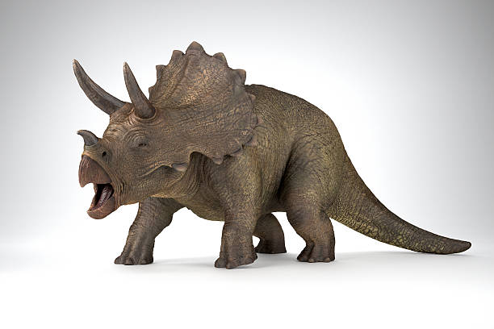
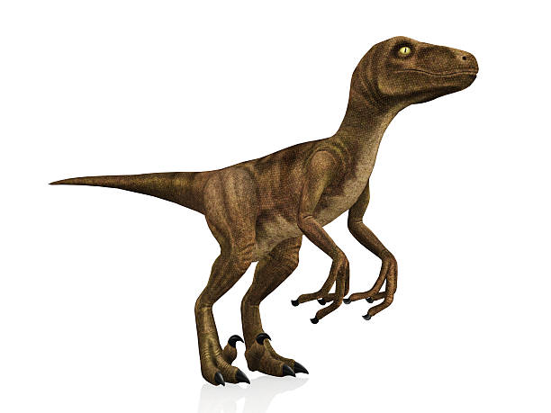
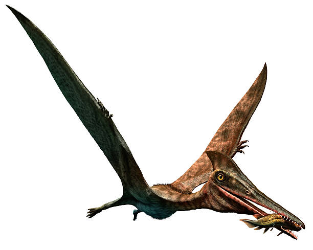
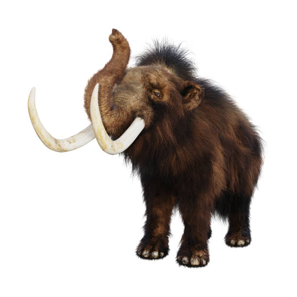
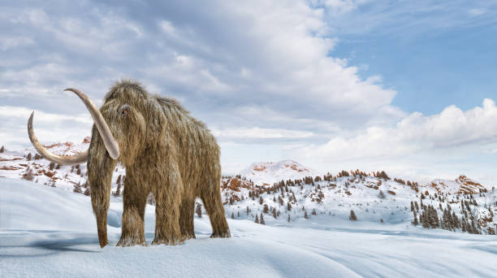
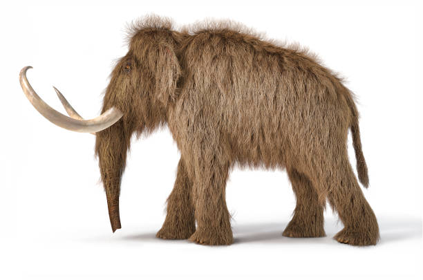
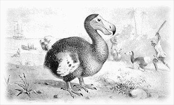

Most Famous Extinct Animals
Dinosaurs
The term 'Dinosaurs' refers to a large, diverse group of animals that ranged from small bird-like animals to gigantic species that are larger than any land animal today. the most notable species include the Tyrannosaurus Rex, Brachiosaurus, Velocirapter, Triceratops, and Pterodactylus. Dinosaurs are very common in media from Jurassic Park to kids shows like Dinosaur Train. Dinosaurs are assumed to have gone extinct from an asteroid impact that affected the globe.
  Woolly Mammoth
Woolly Mammoths were a large, hairy, ancestor of the elephant we know and love today. They lived during the Ice Age and adapted to the cold temperatures with their thick fur. Woolly Mammoths are speculated to have roamed the tundra 300,000 years ago to roughly 1650 B.C.. The exact reason for their extinction is unknown, but scientists have two theories. Either humans hunted them to extinction, or they could not handle the change towards a warmer climate.
  Dodo Bird
The Dodo was a flightless bird that lived on the Island of Mauritius. These birds have a very unique look, with a plump body, large beak, and small wings. They were first found by Portuguese sailors around 1507, and soon after their discovery they were hunted. Humans also introduced invasive species to their island which harmed their local ecosystem. The Dodo bird is one of the most well known examples of an animal lead to extinction by humans. 